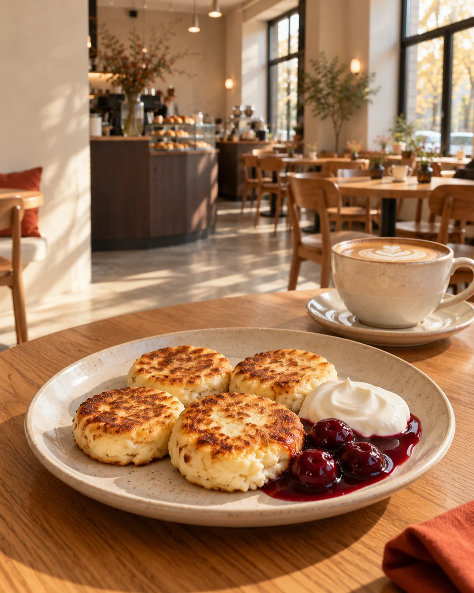
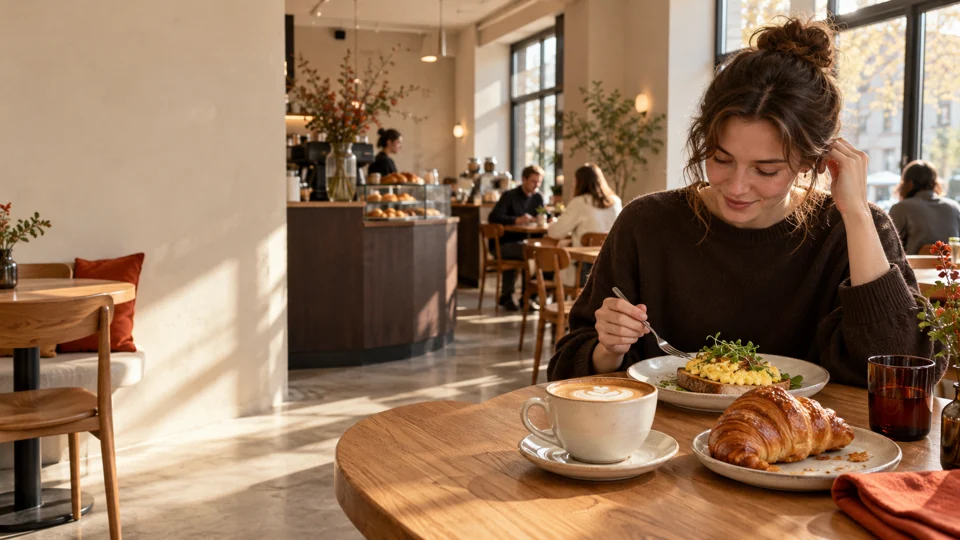
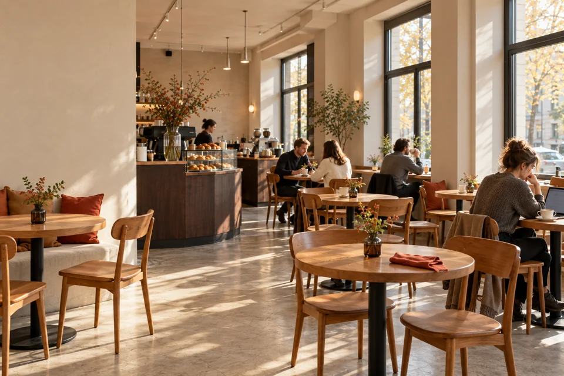
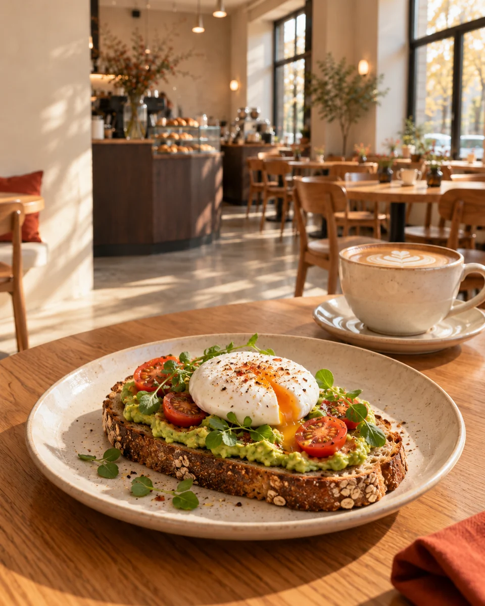
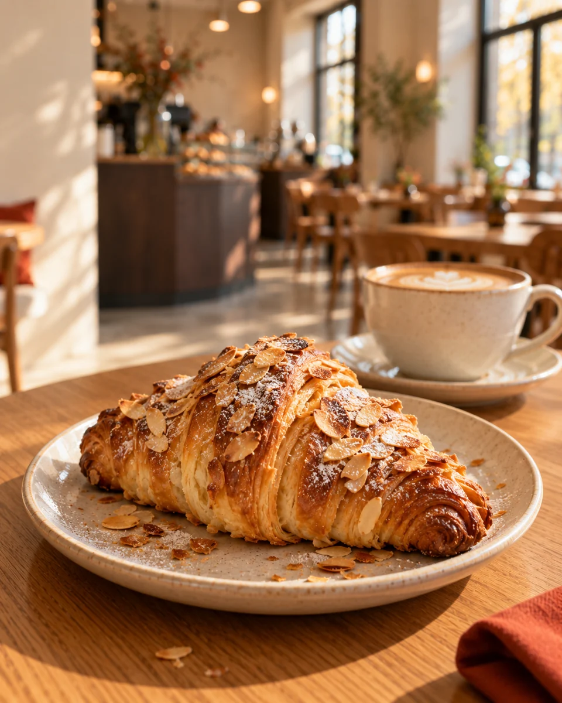
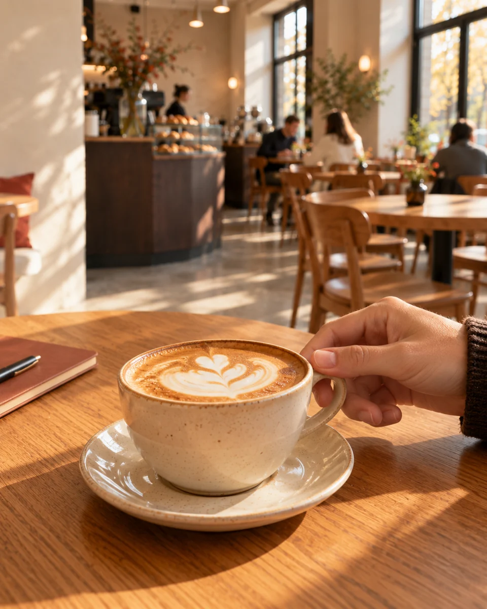
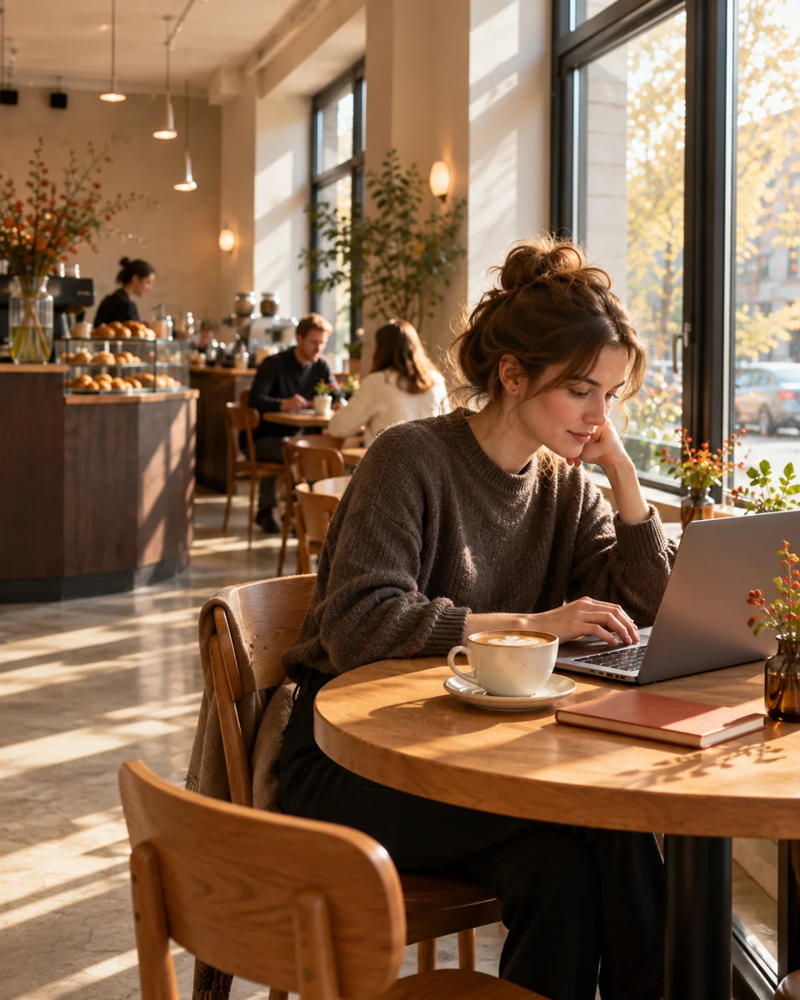
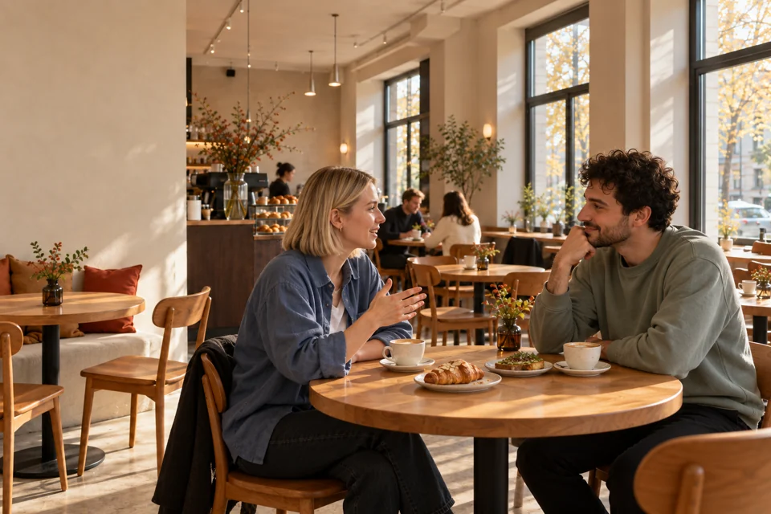
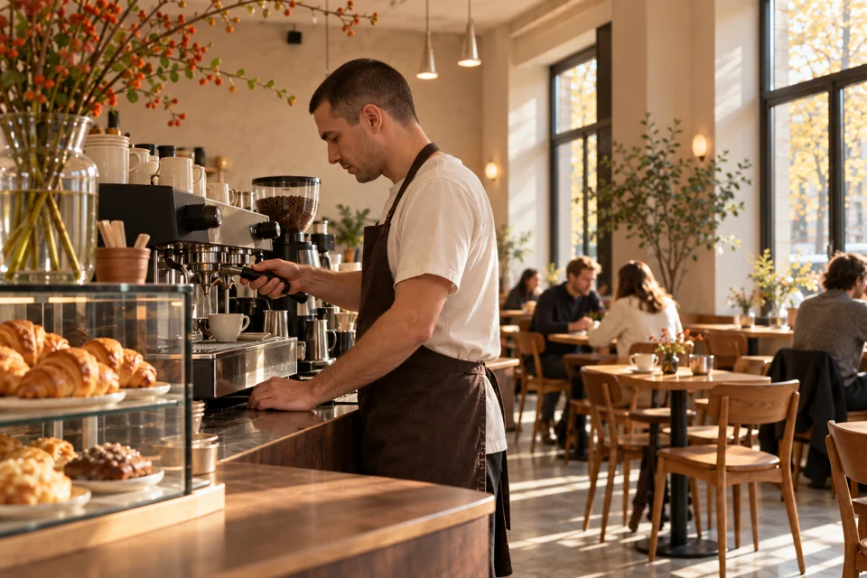

РЯДОМ
кофе · завтраки · выпечка
На завтрак.
На кофе.
Просто так.
Место для обычного дня: позавтракать, встретиться, поработать или забежать за кофе по дороге.
Москва · каждый день08:00 → 22:00
02 / О НАС
Место, куда
заходят
без повода
Утром — за первым кофе. Днём — перекусить или немного поработать. В выходной — встретиться за завтраком и никуда не торопиться.
РЯДОМ — городская кофейня для обычных дней.
Хороший кофе, понятная еда, завтраки и свежая выпечка. Можно остаться или взять с собой.

03 / ПОПУЛЯРНОЕ СЕЙЧАС
То, за чем
возвращаются
Четыре повода заглянуть сегодня.

Авокадо-тост с яйцом
590 ₽
Миндальный круассан
320 ₽
Капучино
320 ₽05 / АТМОСФЕРА
Можно остаться
подольше
Кофе на десять минут. Завтрак на час. Ноутбук, разговор или просто свободный стол у окна.

У каждого свой повод быть РЯДОМ.


ПОЧЕМУ «РЯДОМ»
Хорошее место
не обязательно
должно быть
далеко.
Мы придумали РЯДОМ как место, которое легко становится частью обычного дня.
Зайти перед работой. Встретиться после. Взять кофе по дороге. Позавтракать в выходной.
Не нужен особый повод. Мы просто рядом.
07 / КОНТАКТЫ
Увидимся
рядом↗
Москва
Демонстрационная локация
ПН–ПТ 08:00–22:00
СБ–ВС 09:00–22:00